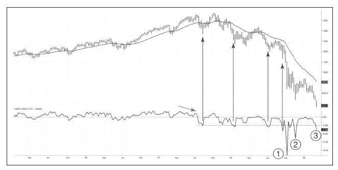

2008年秋天股票市场无情地下跌，多数市场参与者的情绪变得越来越糟，即便是由平空导致的反弹也变得更加短促而虚弱。
我们看标普500指数的历史周线走势图会发现周线新高新低（NH-NL）指标跌到负4 000以下时，会产生一个很好的买入信号。如图10-1中垂直箭头所示，你可能注意到第一条垂线后出现了相当强劲的上涨，但最后两次上涨却非常短促、乏力，这表明熊越来越强、牛越来越弱。
NH-NL指标跌到负4 000以下的情况非常少，在整个美国股票历史上，这个指标从没有跌到过负6 000以下。但是在2008年10月，不可思议的事情发生了，周线NH-NL指标猛跌到负18 000！这种尖角下跌反映出市场已经跌到了完全绝望的地步。贝尔斯登破产了，其售价比总部资产还低；当雷曼进入强制破产清算程序后，华尔街最常听到的词是“交易对手的风险”，机构之间因为恐惧对手不能履约而拒绝交易。

在这种市场氛围下，联邦政府介入市场了。政府通过向市场注入大量资金并出具保函的方式拯救并刺激金融市场。直到今天，危机仍然指向政府错误的节奏、错误的资金投向及资金滥用，但我们很多人都相信如果没有政府介入，市场可能已经崩盘并关门大吉了。
新高新低指标不可思议的下跌（图10-1中1所标示的位置）表明市场已经到了“决一死战”的地步，当这个指标从严重超卖水平返回到零轴之上时，我知道市场不会“关门”了，市场的未来越来越清晰，此时的关键问题是，底何时出现？
2008年11月，市场创出新低，但是周线新高新低指标跌的比前一次浅，只有负10 000，而后在2009年1月返回到零轴之上，之后市场再度转弱。2009年3月，指数以很低的成交量跌到2008年10月和2008年11月的两个底之间。此时新高新低指标如何？这个指标跌到了负5 854，这是一个在熊市开始前达到过的水准。只用这一个指标我们很难确定这是熊市的绝对底部还是熊市中的一次反弹。当然，大量的底背离在底1、2和3之间表明前者更可能发生。